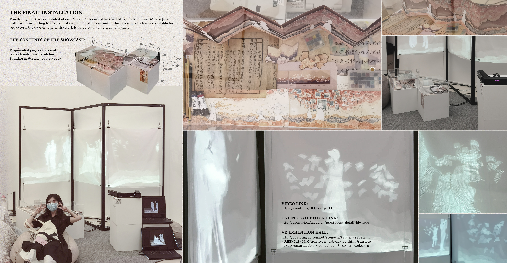
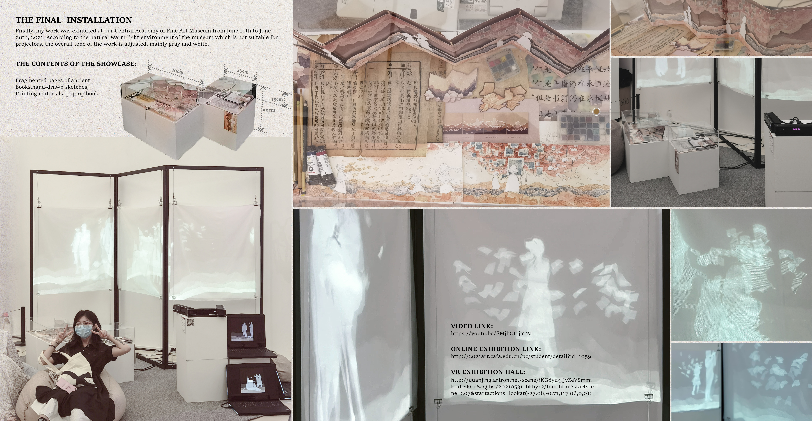

But the books are still waiting forever
3m*1m, June 2021
Exhibited at the Central Academy of Fine Arts Museum
Real-time code computation(Processing) with kinect, Projection on fabrics

This is a real-time interactive projection work that uses modern programming techniques combined
with
traditional hand-painted image materials. The inspiration comes from what the author saw and felt during
the
work of collating ancient books. This work intends to make the 'book', this heavy object, light, and to
give
each page of paper a continuous dynamic that can interact with people, as if they really have souls, and
remain in the form of digital files forever flying in the curtain.
From the perspective of the books, the butterfly-shaped pages of books and the people who come here quietly try to establish a parallel companionship and emotional connection, and traverse the departure of one person after another. Apart from the busy and complicated human daily life, books are always waiting for us forever.


 
